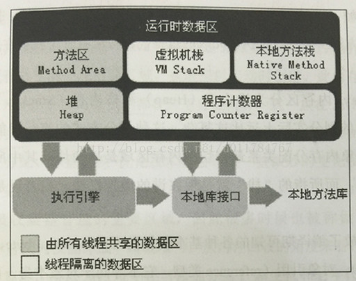

00_java_内存分区
Apr 16, 2016
JVM 运行时数据分区
what?
- 内存>>内存分区>>各个分区有自己的用途, 创建和销毁时间.有的分区随着应用线程的启动和创建.
why?
- 内存分区主要目的是为了更好的进行垃圾回收和数据管理.

1 程序计数器 Program Counter Register
what?
- 线程私有的区域, 用于存储线程的上下文.
- 并发程序的执行是通过使用cpu时间片来执行, 当线程继续切换时, 就会将当前线程执行的一些信息存储到程序计数器内存中.
- 每一个Java线程都有一个程序计数器来用于保存程序执行到当前方法的哪一个指令, 对于非Native方法, 这个区域记录的是正在执行的VM原语的地址, 如果正在执行的是Natvie方法, 这个区域则为空（undefined）.
how?
- 这个区域是Java虚拟机规范中唯一一个没有规定任何OutOfMemoryError的区域.
2 虚拟机栈 (J)VM Stack
what?
- 线程私有的区域, 声明周期和线程周期相同, 用于Java方法执行的内存模型.
- 每个方法被执行的时候, 都会同时创建一个帧(Frame)用于存储本地变量表, 操作栈, 动态链接, 方法出入口等信息.每一个方法的调用至完成, 就意味着一个帧Frame在虚拟机栈中的入栈至出栈的过程.
how?
- 如果线程请求的栈深度大于虚拟机所允许的深度, 将抛出 StackOverflowError异常.
- 如果 虚拟机栈可以动态扩展(VM Spec中允许固定长度的虚拟机栈), 当扩展时无法申请到足够内存则抛出 OutOfMemoryError异常.
1
2
3
4
5
6
7
8
9
10
11
12
13
14
15
16
17
18
19
20
21
22
23
24
25
26
27
28
29
30
31
32
33
34
35
36
37//-Xss128k -XX:+HeapDumpOnOutOfMemoryError
// main thread
public static void main(String[] args) throws Exception{
OutOfMemoryTest oom = new OutOfMemoryTest();
try {
oom.stackLeak();
} catch (Exception e) {
System.out.println("stacklength>> "+oom.stackLength);
}
}
static int stackLength = 1;
static void stackLeak() {
stackLength++;
// if (stackLength==1100){
// return;
// }
stackLeak();
}
// 子线程
public static void main() throws Exception{
new Thread(new Runnable() {
public void run() {
loop(0);
}
private void loop(int i) {
if (i == 1000) {
return;
} else {
i++;
loop(i);
}
}
}).start();
}
3 本地方法栈 Native Method Stack
what?
- 本地方法栈和虚拟机栈功能类似.
- 虚拟机栈用于提供虚拟机VM原语服务.
- 本地方法栈用于提供虚拟机使用native方法服务.
4 方法区 Method Area
what?
- 各个线程共享的区域, 用于存储已经被JVM加载的类Class结构信息, 包括常量池, 字段描述, 方法描述等数据.
- 分两个子区域: 持久代 和代码缓存.
- (“永久代Permanent Generation”- JVM垃圾回收策略的划分方法, VM Spec原文描述:the method area is logically part of the heap)
- (“代码缓存”- 用来存储编译后的代码.编译后的代码就是本地代码(硬件相关的), 它是由JIT(Just In Time)编译器生成的, 这个编译器是 Oracle HotSpot JVM所特有的)

4.1 运行时常量池 Runtime Constant Pool
what?
- 方法区的一部分.
- Class文件中除了有类的版本, 字段, 方法, 接口等描述等信息外, 还有一项信息是常量表(constant_pool table), 用于存放 编译期 已可知的常量, 这部分内容将在类加载后进入方法区（永久代）存放.
- 但是Java语言的常量不一定只有编译期预置入Class的常量表的内容才能进入方法区常量池, 运行期 也可将新内容放入常量池 (如, String.intern()方法)
how?
- 如果运行时常量池超过方法区内存限制时, 常量池无法申请内存时会抛出OutOfMemoryError异常.
1
2
3
4
5
6
7
8
9//-XX:PermSize=5M -XX:MaxPermSize=5M -XX:+HeapDumpOnOutOfMemorError
// java1.6及以前版本
public static void main(String[] args) {
List<String> list = new ArrayList<String>();
int i = 0;
while(true){
list.add(String.valueOf(i++).intern());
}
}
5 堆区 Heap
what?
- 各个线程共享的区域, 用于存储对象实例和数组数据.
- 在虚拟机启动时被创建.
- (“GC堆”, 采用分代垃圾回收策略, Java堆区细分为新生代和老年代, 还可以更细分eden, from survivor, to survivor, 甚至更细粒度的本地线程分配缓冲TLAB 等)
- 堆区可以是物理上连续的内存空间, 也可以是不连续的内存空间.
how?
- 更好的回收内存, 或更快的分配内存.(深入理解:JVM内存管理)
- 如果在堆中无法分配内存, 并且堆无法在扩展时, 将会抛出OutOfMemoryError异常.
1 | //-Xms10m -Xmx10m -XX:+HeapDumpOnOutOfMemoryError |

6 本机直接内存 DeirctMemory
what?
- 顾名思义
- 默认与Java堆-Xmx一样
- 直接内存（Direct Memory）并不是虚拟机运行时数据区的一部分，也不是Java虚拟机规范中定义的内存区域.但是这部分内存也被频繁地使用，而且也可能导致OutOfMemoryError异常出现. 在JDK 1.4中新加入了 NIO类, 引入了一种基于通道（Channel）与缓冲区（Buffer）的I/O方式, 它可以使用Native函数库直接分配堆外内存, 然后通过一个存储在Java堆中DirectByteBuffer对象作为这块内存的引用进行操作.这样能在一些场景中显著提高性能，因为避免了在Java堆和Native堆中来回复制数据。
- 直接内存的分配不会受到Java堆大小的限制，但是，既然是内存，肯定还是会受到本机总内存（包括RAM以及SWAP区或者分页文件）大小以及处理器寻址空间的限制。服务器管理员在配置虚拟机参数时，会根据实际内存设置-Xmx等参数信息，但经常容易忽略.值得注意!
how?
- 直接内存，使得各个内存区域总和大于物理内存限制（包括物理的和操作系统级的限制），从而导致动态扩展时出现 OutOfMemoryError异常.
- 下面例子, 直接通过反射获取 Unsafe实例进行内存分配 ( Unsafe类的 getUnsafe()方法限制了只有引导类加载器才会返回实例，也就是基本上只有 rt.jar里面的类的才能使用) , 因为 DirectByteBuffer也会抛 OOM异常，但抛出异常时实际上并没有真正向操作系统申请分配内存，而是通过计算得知无法分配既会抛出，真正申请分配的方法是 unsafe.allocateMemory();
1
2
3
4
5
6
7
8
9
10
11//-Xmx20M -XX:MaxDirectMemorySize=10M
private static final int _1MB = 1024 * 1024;
public static void main(String[] args) throws Exception {
Field unsafeField = Unsafe.class.getDeclaredFields()[0];
unsafeField.setAccessible(true);
Unsafe unsafe = (Unsafe) unsafeField.get(null);
while (true) {
unsafe.allocateMemory(_1MB);
}
}
小结
- JVM 数据分区结构: 计数器, 栈, 堆.
- 思考一个类的main方法在内存中的执行过程.
Java 8 元空间 MetaSpace
what?
- 它是本地堆内存中的一部分
- 它可以通过-XX:MetaspaceSize和-XX:MaxMetaspaceSize来进行调整
- 当到达XX:MetaspaceSize所指定的阈值后会开始进行清理该区域
- 如果本地空间的内存用尽了会收到java.lang.OutOfMemoryError: Metadata space的错误信息。
- 和持久代相关的JVM参数-XX:PermSize及-XX:MaxPermSize将会被忽略掉，并且在启动的时候给出警告信息。
- 充分利用了Java语言规范中的好处：类及相关的元数据的生命周期与类加载器的一致
内存分配模型
- 绝大多数的类元数据的空间都从本地内存中分配
- 用来描述类元数据的类也被删除了，分元数据分配了多个虚拟内存空间
- 给每个类加载器分配一个内存块的列表，只进行线性分配。块的大小取决于类加载器的类型， sun/反射/代理对应的类加载器的块会小一些。
- 不会单独回收某个类，如果GC发现某个类加载器不再存活了，会把相关的空间整个回收掉。这样减少了碎片，并节省GC扫描和压缩的时间。
how?
- 使用-XX:MaxMetaspaceSize参数可以设置元空间的最大值，默认是没有上限的，也就是说你的系统内存上限是多少它就是多少。
- 使用-XX:MetaspaceSize选项指定的是元空间的初始大小，如果没有指定的话，元空间会根据应用程序运行时的需要动态地调整大小。
- 一旦类元数据的使用量达到了“MaxMetaspaceSize”指定的值，对于无用的类和类加载器，垃圾收集此时会触发。为了控制这种垃圾收集的频率和延迟，合适的监控和调整Metaspace非常有必要。过于频繁的Metaspace垃圾收集是类和类加载器发生内存泄露的征兆，同时也说明你的应用程序内存大小不合适，需要调整。
外文引用:
中文引用:
Java 8: 从永久代（PermGen）到元空间（Metaspace）
1 | // http://www.java2s.com 下载如下包: |
jdk1.7环境下,运行结果:

jdk1.8环境下,运行结果:(默认内存分配, 1.8下默认会忽略 1.7下 -XX:PermSize=5M -XX:MaxPermSize=5M)
jdk1.8环境下,运行结果:(自定义内存分配)